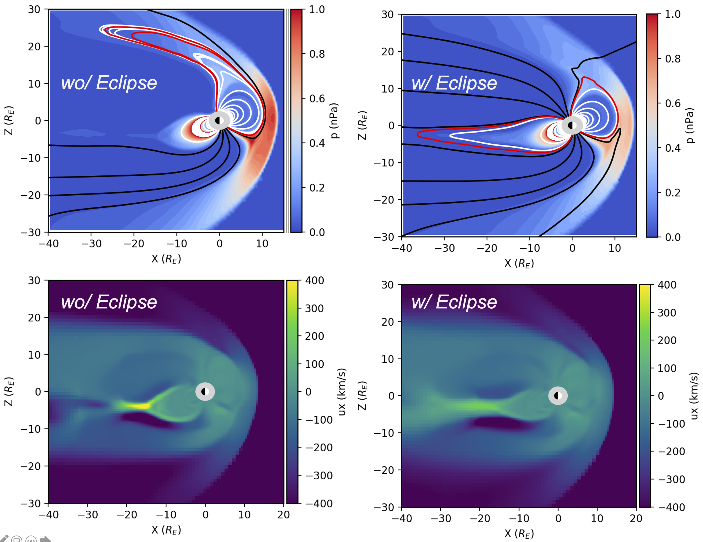

404 Not Found
Inter-hemispheric asymmetries in high-latitude electrodynamic forcing and the thermosphere during the October 8–9, 2012, geomagnetic storm: An integrated data–Model investigation
Inter-hemispheric asymmetry (IHA) in Earth’s ionosphere–thermosphere (IT) system can be associated with high-latitude forcing that intensifies during storm time, e.g., ion convection, auroral electron precipitation, and energy deposition, but a comprehensive understanding of the pathways that generate IHA in the IT is lacking. Numerical simulations can help address this issue, but accurate specification of high-latitude forcing is needed. In this study, we utilize the Active Magnetosphere and Planetary Electrodynamics Response Experiment-revised fieldaligned currents (FACs) to specify the high-latitude electric potential in the Global Ionosphere and Thermosphere Model (GITM) during the October 8–9, 2012, storm. Our result illustrates the advantages of the FAC-driven technique in capturing high-latitude ion drift, ion convection equatorial boundary, and the storm-time neutral density response observed by satellite. First, it is found that the cross-polar-cap potential, hemispheric power, and ion convection distribution can be highly asymmetric between two hemispheres with a clear By dependence in the convection equatorial boundary. Comparison with simulation based on mirror precipitation suggests that the convection distribution is more sensitive to FAC, while its intensity also depends on the ionospheric conductance-related precipitation. Second, the IHA in the neutral density response closely follows the IHA in the total Joule heating dissipation with a time delay. Stronger Joule heating deposited associated with greater high-latitude electric potential in the southern hemisphere during the focus period generates more neutral density as well, which provides some evidences that the high-latitude forcing could become the dominant factor to IHAs in the thermosphere when near the equinox. Our study improves the understanding of storm-time IHA in high-latitude forcing and the IT system.
ClickforPaper
page1
MHD Simulation

- google
- instragram
- facebook